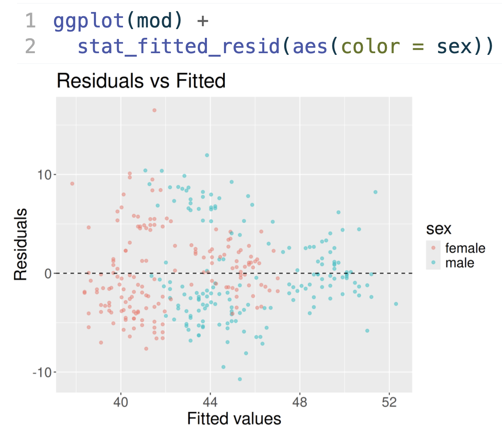

Attaching package: 'dplyr'The following objects are masked from 'package:stats':
filter, lagThe following objects are masked from 'package:base':
intersect, setdiff, setequal, uniondiscussion
grep -i "why we do this" Grayson :: diagnostic plots with gg
Grayson :: diagnostic plots with gg
I believe that learning to code while learning statistics helps students gain a deeper understanding of the material.
But nowadays, fewer people agree with me!
plot a regression lineNow limit to cars with displacement below 200.
plot which regression line?`geom_smooth()` using formula = 'y ~ x'`geom_smooth()` using formula = 'y ~ x'Warning: Removed 16 rows containing non-finite outside the scale range
(`stat_smooth()`).Warning: Removed 16 rows containing missing values or values outside the scale range
(`geom_point()`).

plot which regression line?`geom_smooth()` using formula = 'y ~ x'
`geom_smooth()` using formula = 'y ~ x'R ggplot(mod) Grayson :: diagnostic plots with gg

autoAlt --describe
Use LLM to generate the alt text for my slides, notes, etc.
Reminds me of…
autoAlt is an R package for automatically generating alt-text from qmd and rmd files. The generate_alt_text() function uses ellmer and BrailleR to create alt-text for plots in documents.
curl assessment --hack
Devise additional quiz questions for standards-based grading using LLMs
My experience…
simulate --from-table
Simulating data to match examples in journal articles when all you have is a table or a plot.
/
make packages Colin +
Colin +  William
William
Productivity as an R package / the grind of course-ops, packaged
ghclass, q2r, markermdmoodleRThe pattern: wrap the annoying part, ship it, reuse it
moodlequiz --deploy William :: moodlequiz
moodleR Interact with a Moodle Course Page via Headless Chrome
Reminds me of…
moodlequiz package allows the creation of Moodle quiz questions using literate programming with R Markdown.